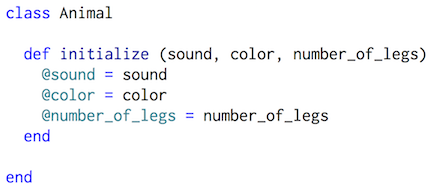
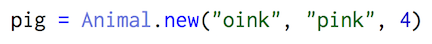
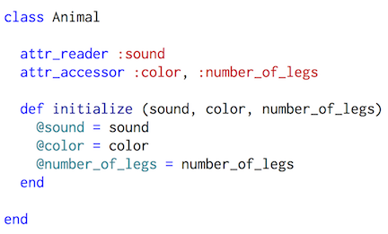
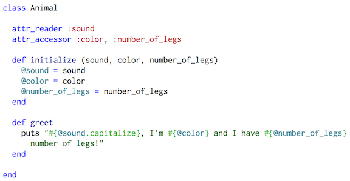

What is a class?
In Ruby, a class gives the guidelines for how an object is created. When a class is created for an object, their features are defined, and new versions ("instances") of them can be created. There are built-in classes, such as "Integer" and "String", but the real power comes with the ability to create your own classes. You can crate methods inside of your classes, that interact with each other through use of instance variables.How do you create a class?
Classes are defined using "class" followed by the class name, which typically starts with a capital letter. There is usually an initialize method, which tells Ruby how to behave when a new instance of a class is made.Here is an example of how a class and an initialize method inside the class is made:

"Animal", @sound, @color, and @number_of_legs can be used anywhere within the class.
How is an instance of a class created?
An instance of a class is created using ClassName.new, and includes the number of arguments required in the initialize method. For example, in our class, Animal, 3 arguments must be given when creating a new instance (sound, color, and number_of_legs).

"pig". There are different ways of doing this, but the most efficient way is through use of "attr accessors".
What are attr accessors?
Attr accessors allow you to read/write to the attributes of an instance. There are three types of attr accessors: attr_reader lets you just read the attribute, attr_writer lets you just overwrite the attribute, and attr_accessor allows you to both read and overwrite the attribute. Here is an example of how attr accessors would be used in our class Animal:

pig.sound will return "oink". Let's say we want to make this pig black instead of pink. To overwrite its color we would input pig.color = "black". Now, pig.color will return "black".
Creating Instance Methods
To solidify your understanding of classes, let's create an instance method. Instance methods can only be called on instances of a class.Here is an example of an instance method called "greet":

pig.greet, will return "Oink, I'm black and I have 4 legs."